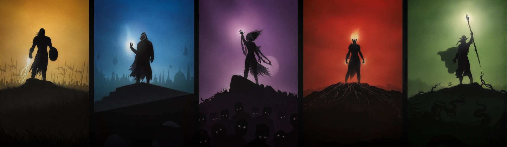
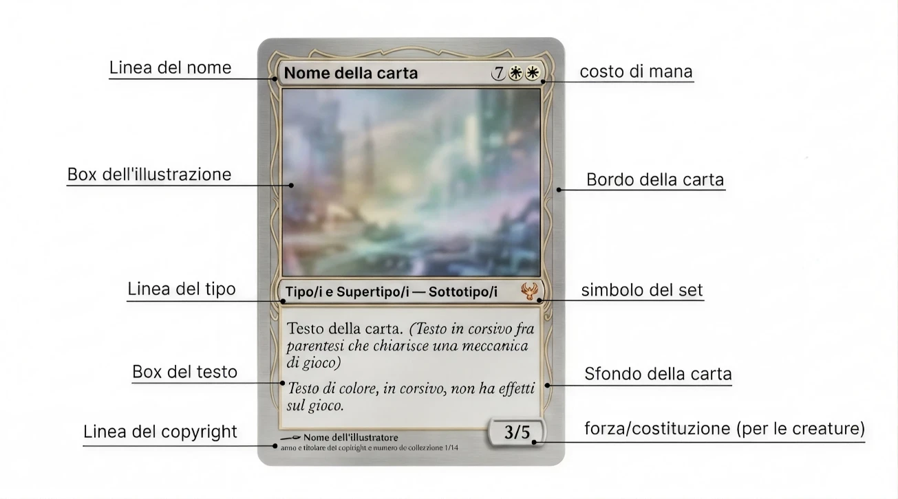

Le Carte
Anatomia di una Carta
Ogni carta di Magic: The Gathering è un piccolo capolavoro di game design, in cui ogni elemento grafico e testuale ha una funzione precisa. Imparare a leggere una carta è il primo passo fondamentale per padroneggiare il gioco. In alto a sinistra troviamo il nome della carta, mentre in alto a destra compare il costo di mana, ovvero l'energia necessaria per giocarla. Sotto l'illustrazione si trova la riga del tipo, che indica la categoria della carta e il suo eventuale sottotipo.
Il riquadro di testo contiene le abilità e gli effetti della carta, mentre il testo in corsivo (flavor text) racconta un frammento di lore e ambientazione. In basso a destra, le creature mostrano i valori di forza e costituzione, che determinano la loro capacità in combattimento.

I Tipi di Carta
In Magic esistono diversi tipi fondamentali di carta, ognuno con regole specifiche su quando e come possono essere giocati. Conoscerli è essenziale per costruire un mazzo equilibrato e sviluppare strategie vincenti.
Creature: Il cuore pulsante di quasi ogni mazzo. Le creature attaccano gli avversari e difendono il loro controllore. Ogni creatura ha valori di forza (danni inflitti) e costituzione (danni sopportabili) e può possedere abilità speciali come Volare, Tocco Letale o Rapidità.

Stregonerie: Magie potenti che possono essere lanciate solo durante il proprio turno, nella fase principale. Una volta che il loro effetto si è risolto, finiscono nel cimitero. Sono spesso devastanti: distruzioni di massa, evocazioni di pedine o enormi danni diretti.

Istantanei: La risposta tattica per eccellenza. A differenza delle stregonerie, gli istantanei possono essere giocati in qualsiasi momento, anche durante il turno dell'avversario. Sono lo strumento ideale per contromagie, rimozioni a sorpresa e trucchi di combattimento.

Incantesimi: Permanenti che restano sul campo di battaglia generando effetti continui. Possono potenziare le tue creature, indebolire quelle avversarie o alterare le regole stesse del gioco a tuo favore.

Artefatti: Permanenti incolori che rappresentano oggetti magici, costrutti e dispositivi. Non richiedono un colore specifico di mana, il che li rende estremamente versatili e adatti a qualsiasi tipo di mazzo.

Terre: Le fondamenta di ogni mazzo. Le terre producono mana, la risorsa essenziale per lanciare qualsiasi magia. Ne esistono cinque tipi base — Pianura, Isola, Palude, Montagna e Foresta — ciascuno associato a uno dei cinque colori di Magic.

I Cinque Colori del Mana
Il sistema dei cinque colori è il cuore dell'identità di Magic. Ogni colore rappresenta una filosofia, uno stile di gioco e un insieme di abilità specifiche. Comprendere i colori significa comprendere il gioco stesso.
- Bianco (Pianure): L'ordine, la protezione e la comunità. Il bianco eccelle nel creare eserciti di piccole creature, guadagnare punti vita e utilizzare rimozioni universali.
- Blu (Isole): La conoscenza, l'inganno e il controllo. Il blu domina attraverso il pescaggio di carte, le contromagie e la manipolazione del flusso di gioco.
- Nero (Paludi): L'ambizione, il potere e il sacrificio. Il nero non ha limiti morali: distrugge creature, riporta i morti in vita e scambia punti vita per risorse.
- Rosso (Montagne): La passione, il caos e la libertà. Il rosso è velocità pura: creature aggressive, danni diretti e distruzione di artefatti e terre.
- Verde (Foreste): La natura, la crescita e la forza bruta. Il verde schiera le creature più grandi, accelera la produzione di mana e potenzia le proprie forze.

La Rarità
Ogni carta di Magic possiede un livello di rarità, indicato dal colore del simbolo dell'espansione. Le carte comuni (simbolo nero) sono le più frequenti nelle bustine, seguite dalle non comuni (argento), le rare (oro) e infine le mitiche rare (arancione/rosso), le più potenti e ricercate. La rarità influenza non solo il collezionismo e il valore di mercato, ma anche il bilanciamento del gioco nei formati Limited come Draft e Sealed.